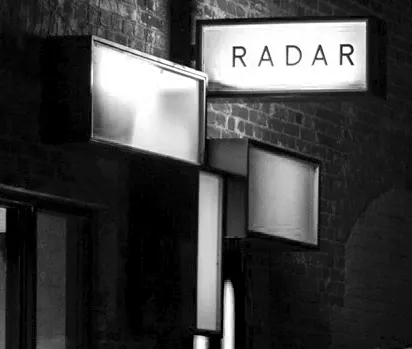

Som en del af personalet har jeg haft fornøjelsen af at være med til utallige arrangementer og opleve den magi, der opstår, når de lokale musikere træder op på scenen. Hver koncert er en helt ny oplevelse. Jeg har set lokale bands tage deres første nervøse skridt på scenen og senere vende tilbage som stjerner.
Da jeg første gang trådte ind på Radar som 19-årig frivillig, anede jeg ikke, at dette sted ville blive mit andet hjem. Nu, otte år senere, kan jeg ikke forestille mig Aarhus uden Radar...
ET AF DE BEDSTE SPILLESTEDER I AARHUS
Hver koncert er en mulighed for at opdage nye talenter og opleve live-musik i en mere intim atmosfære, hvor publikum og kunstnere virkelig forenes. Det er denne intimitet, der gør Radar til et af de absolut bedste spillesteder i Aarhus.
I mere end otte år har Radar været mit andet hjem, og nu står vi overfor en trussel om lukning, som vil ramme både musikmiljøet og kulturlivet i Århus.
Radar er mere end bare koncerter. Det er et fællesskab, en rugekasse for talent, og en åben platform for niche-genrer, der ellers ville have svært ved at finde et hjem. Her mødes musikelskere på tværs af alder og baggrund, forenede i deres passion for god musik og autentiske oplevelser. Vi tilbyder en platform for lokale musikere, der ofte kæmper for at finde steder at spille.
Men det handler ikke kun om musikken. Radar er også et fællesskab og et sted, hvor unge mennesker kan mødes, dele deres passion for musik og skabe livslange venskaber. Vores dedikerede frivillige spiller en central rolle i dette fællesskab og hjælper med at gøre hver koncert til en uforglemmelig oplevelse. Sammen skaber vi et miljø, hvor alle føler sig velkomne, uanset om de er nye i nattelivet i Aarhus eller garvede koncertgængere.
Tanken om at miste Radar er kort sagt hjerteskærende. Uden vores spillested vil mange lokale musikere miste muligheden for at optræde og udvikle sig. Det vil også betyde færre koncerter i Aarhus, hvilket vil påvirke vores kulturliv negativt. Vi risikerer at miste det pulserende natteliv, som ellers gør vores by så levende.